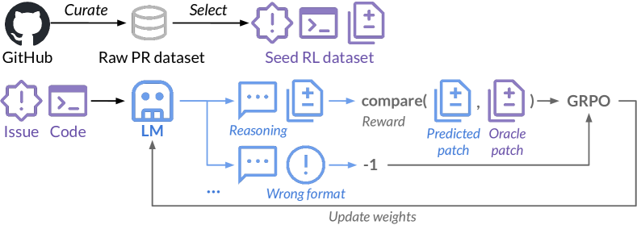

发展脉络
后训练经历了 SFT、RLHF、DPO，再到可验证奖励和推理时扩展；关键转变是从模仿答案转向优化可检查的行为和过程。
GRPO 教会模型「对一道题想对」，Agentic RL 要教会它「在一连串动作里做对每一环」——调用工具、观察结果、再决策。从单步 MDP 到多步 POMDP，从整轨迹奖励到逐步信用分配，这一页讲清「怎么训一个 Agent」的强化学习全流程，以及与 Agent 篇「怎么搭一个 Agent」的边界。
Agentic RL 的训练回路：Agent 在环境里走完一条「轨迹」（观察 → 动作 → 反馈 → 再动作），整条轨迹结束后拿到一个稀疏奖励（任务成没成）。难点在于把这份「只属于终点」的功劳，分摊回每一步——这就是信用分配。
GRPO/RLVR 的场景是「单步决策」：模型一次性给出完整答案，执行器判对错。而 Agent 是多步序贯决策：每步动作影响后续状态，且模型只能看到环境的局部（部分可观测）。数学上，这从马尔可夫决策过程（MDP）升级为部分可观测马尔可夫决策过程（POMDP）：
$$\text{轨迹:}\ \tau = (o_1, a_1, o_2, a_2, \dots, o_T, a_T),\quad R(\tau) \in \{0, 1\}$$
这里的 $o_t$ 是观察（工具返回、环境状态），$a_t$ 是动作（选工具、给参数）。奖励 $R(\tau)$ 只在轨迹终点给出，且通常是二值的——任务成功了没有。
「部分可观测」是 Agentic RL 与 RLVR 最本质的区别之一。在 RLVR 里，模型看到的题目就是完整状态；而在 Agent 场景里，模型每一步只拿到局部观察 $o_t$，真正的世界状态（数据库里有哪些表、文件系统里有哪些文件、远程服务当前是否在线）它看不到，只能靠历史 $h_t = (o_1, a_1, \dots, o_t)$ 去推断。于是策略实际依赖的不是状态而是历史：$\pi_\theta(a_t \mid h_t)$。当观察有噪声、有延迟、甚至工具偶尔返回空结果时，模型必须在「不确定的信念」上做决策——这正是 POMDP 比 MDP 难的根源：状态转移不可直接观测，信用分配也跟着变得不确定。
一个常被忽略的推论：训练数据记录的必须是完整历史 (o_1,a_1,...,o_t)，而不仅仅是当前观察。如果采样时只保存了「最后一条工具返回」，模型在更新时就会缺少上下文，学不出「为什么在这一步选了这个动作」。这也是为什么 Agentic RL 的缓冲区比单步 RL 复杂——它要存一整条可重放的轨迹，而不是一个问答对。
| 维度 | RLVR（单步） | Agentic RL（多步） |
|---|---|---|
| 决策结构 | 一次生成完整答案 | 多步「观察-动作」循环 |
| 状态模型 | 无状态 | POMDP（部分可观测） |
| 奖励时机 | 立即（答案判分） | 终点（任务成败） |
| 奖励密度 | 稠密（每步可判） | 稀疏（只有成败） |
| 核心难题 | 探索正确解法 | 信用分配 + 探索 |
| 轨迹长度 | 短（百级 token） | 长（千级 token + 工具调用） |
终点奖励怎么「分账」给每一步？这是多步决策训练的核心难题，答案是优势估计。策略梯度家族用 REINFORCE 估计量，配上基线降低方差：
$$\nabla J \approx \mathbb{E}_{\tau \sim \pi_\theta}\left[\sum_{t} A_t \cdot \nabla_\theta \log \pi_\theta(a_t \mid o_{\le t})\right]$$
GAE（广义优势估计）用「折扣回报 + 价值函数（或基线）」计算每步优势 $A_t$，回答「这一步相比平均水平，好多少」。直觉：如果某一步之后任务大概率成功，这一步的优势就是正的，权重就大——模型学会「把成功归因到关键动作」。
Agentic RL 的奖励设计决定上限，两条路线各有限制：
| 路线 | 优点 | 缺点 | 典型任务 |
|---|---|---|---|
| 可验证奖励 | 无偏、便宜、可扩展 | 只覆盖「结果可判」的任务 | 代码生成、SQL 查询、数据操作 |
| 模型奖励 | 覆盖开放任务 | 奖励黑客、判官偏见 | 报告写作、规划质量 |
| 过程奖励 | 逐步反馈，缓解稀疏 | 标注成本高 | 长轨迹任务 |
工程现实：能自动验证就用自动验证；模型奖励只用于无法验证的场景，且必须防奖励黑客（模型找到捷径骗过判官，而不是真的完成任务）。
前面讲了奖励信号的两条路线（可验证 vs 模型奖励），落地到"带工具调用的轨迹"上，还会出现三类特有的设计坑。它们都很隐蔽，几乎不会让训练立刻崩掉，但会让最终策略"看着分数很高、实际没法用"。
第一类：奖励只看最终结果，忽略过程浪费。如果任务只判"最后成功没"，模型会学出绕远路的行为——比如先调用十几次工具反复确认，最后成功一次。可验证奖励只关心结果时，"浪费型成功"和"高效成功"得分一样，模型没有动机收敛到短路径。解法是给轨迹长度或工具调用次数加一个小的负奖励，或者直接把"成功且步骤少"作为奖励目标。
第二类：工具返回信息泄漏。有些任务的奖励判定器依赖的字段，恰好会出现在工具返回里。模型一旦发现"只要复述返回里的某个字段就能拿分"，就会停止真正完成任务、转去模仿返回格式。这类 hack 在 SQL 任务里尤其常见——答案有时可以直接从报错信息里读出来。解法是在奖励计算时对输入做脱敏，或者人工抽检高分轨迹是不是在"抄答案"。
第三类：环境随机性污染奖励。如果环境不是确定性的（网络延迟、外部服务状态波动），同一条轨迹重放两次可能得到不同结果。模型会开始把失败归因于"运气"而不是反思策略，策略梯度信号也随之带上噪声。解法是记录环境快照、在可重放的环境上做离线评估，把"环境噪声"和"策略优劣"分开统计。
这三类坑的共同点：它们都发生在"奖励计算"这个环节之外，需要你在设计奖励函数时就思考"模型的捷径空间"。一个实用的检查方法是——把自己想象成最懒的模型，看看能不能不动真功夫就骗到高分。能骗到，就说明奖励还没设计完。
用一个只有 3 步的轨迹，看看「只奖励最终结果」会引出什么问题，以及加一个长度惩罚后会发生什么。假设任务「把某个 API 的响应缓存到本地文件」，正确做法 2 步就能完成：调用 API、写文件。
场景一：奖励只判「任务成没成」。模型 A 花 2 步成功，奖励 1；模型 B 先调用 API 确认格式、再调用一次确认字段、再打印文档、再写文件——4 步也成功，奖励同样是 1。两者得分一样，策略梯度无法区分「高效成功」和「浪费型成功」，模型 B 的绕远路行为不但不被惩罚，甚至因为它的动作模式在轨迹里更常见而变得更稳。
场景二：加上「成功得 1 分，且每多调用一次工具扣 0.05 分」。模型 A 奖励 1 − 2×0.05 = 0.90，模型 B 是 1 − 4×0.05 = 0.80。现在两者有了区分度，策略梯度会推动模型从「绕远路」收敛到「短路径」。注意这个 0.05 的取值很关键：太大，模型会为了省一次调用而跳过必要的验证步骤（反而变脆）；太小，又起不到区分作用。工程上通常先跑一版无惩罚的基线，统计「成功轨迹的平均步数」，再以它为目标定惩罚强度。
还有一个容易被忽略的副作用：长度惩罚的粒度。如果按「工具调用次数」扣分，模型可能把多次调用合并成一次超长调用（调用次数没变，但单次调用里塞了更多逻辑）；如果按「token 数」扣分，又可能诱导模型把必要推理也压缩掉。实践中「调用次数 + 结果缓存命中率」两个信号一起看，比单看一个更可靠。
训练一个 Agent 不只是算法问题，更是系统工程。生产级 Agentic RL 需要「采样-训练」解耦：大量 rollout worker 并行跑 Agent 轨迹，主节点做策略更新。
关键工程点：
Agentic RL 的主流训练算法不是经典 PPO 重演，而是把 GRPO 扩展到多步轨迹：GRPO 用「组内相对优势」替代价值网络做基线——同一问题采样多组轨迹，以组内平均为基线算优势。这个设计在多步场景尤其重要：因为价值网络在长轨迹上很难训准，组内基线却几乎免费。
这套「GRPO 训多步 Agent」的组合并不是纸面设想，2025 年的 SWE-RL 已经把它完整跑通。下面这张论文原图展示的就是一个真实的多步 Agent 训练流水线：输入来自软件仓库的真实 issue，策略模型要生成一段代码补丁（多步推理），奖励由「预测补丁与真实补丁的匹配度」这类轻量规则给出，最后用 GRPO 做策略优化。整条链路和本页前面讲的「环境 → 轨迹 → 稀疏奖励 → 信用分配 → GRPO 更新」完全一一对应。

新手读这张图，从左到右分四段。第一段是数据构造：从 GitHub 的 PR（Pull Request）记录里提取 issue 描述、代码上下文和人工合并的补丁，构成「带正确答案」的种子数据集——这对应本页说的「环境要可重放、要有真值」。第二段是策略采样：策略 LLM 基于 issue 生成补丁，中间经过推理与多步生成，对应多步轨迹的 rollout 阶段。
第三段是奖励计算：把生成的补丁和真实补丁做相似度匹配，格式正确的按匹配度给分、格式错误的直接给负奖励——这就是一个典型的「轻量可验证奖励」，比训练一个奖励模型便宜得多，也正是 RLVR 精神的直接继承。第四段是策略更新：用 GRPO 做组内归一化后更新策略。注意图里没有价值模型——GRPO 的「砍掉 critic」在多步场景依然成立。
这张图给 Agentic RL 的最大启示是「奖励的性价比」：SWE-RL 没有用昂贵的模型奖励，而是用「补丁相似度」这种零成本的规则信号，就训出了 SWE-bench Verified 上 41.0% 的解决率（参数量 100B 以下模型当时的最好成绩）。它说明在多步 Agent 场景里，设计一个便宜但无偏的规则奖励，往往比堆一个昂贵但可能被 hack 的模型奖励更划算——这正好呼应本页「三、奖励信号」一节的可验证优先原则。
def grpo_agent_update(trajectories, group_size=8, epsilon=0.2, kl_coef=0.1):
"""GRPO 扩展到多步 Agent 轨迹（示意）
trajectories: 同一任务的多条轨迹
每条 = [(o1, a1, logp1), (o2, a2, logp2), ...] + 终点奖励 R
"""
# 1. 组内奖励归一化 → 相对优势
rewards = [t["reward"] for t in trajectories] # 每条轨迹一个终点奖励
mean_r = sum(rewards) / len(rewards)
std_r = max(sum((r - mean_r) ** 2 for r in rewards) / len(rewards) ** 0.5, 1e-6)
advantages = [(r - mean_r) / std_r for r in rewards] # 每条轨迹的优势
# 2. 对每条轨迹的每一步，计算策略梯度损失（clip 防止过更新）
total_loss = 0
for traj, adv in zip(trajectories, advantages):
for step in traj["steps"]:
# 当前策略概率 / 旧策略概率（采样时记录）
ratio = step["new_logp"] - step["old_logp"]
# 简化：真实实现用 ratio 的 clip 项 + KL 约束
step_loss = -adv * ratio
total_loss += step_loss
# 3. 加上对参考策略的 KL 约束，防止策略漂移
total_loss += kl_coef * sum(
s["kl_to_ref"] for t in trajectories for s in t["steps"]
)
return total_loss与单步 GRPO 的关键差异：
多步决策的探索比单步困难得多：单步探索只要「换一种解法」，多步探索要「换一整条路径」，且中途的失败会掩盖后面的潜在成功。常见手段：
多步决策的奖励可以按"打分的粒度"分成轨迹级、步骤级和过程级三种，它们解决的是同一个问题的不同侧面：稀疏奖励怎么变稠密。
一个实用的经验法则：能靠轨迹级奖励学出来的任务，就不要急着加步骤奖励。先跑一版纯终点奖励，看模型能不能自己探索出成功路径；如果探索不动（成功率长期为零），再考虑用步骤奖励"喂"它。步骤奖励像脚手架——搭的时候有用，但忘了拆就会让模型永远依赖人类给出的步骤。
工程上还有一个折中：轨迹级奖励 + 步骤级"软提示"。也就是只在任务进行到一半时给一个"进度奖励"（比如测试用例的通过率），但不预设具体动作。这样既保留了探索自由度，又让模型在超长轨迹里不至于完全失明。
还有一种"便宜"的稠密化手段常被忽略：失败轨迹回收。训练结束后，把探索期的失败轨迹重新打分、标注失败原因，当作下一步训练的数据。它不改变奖励函数，只是让模型看到"这条路走不通"的负样本，相当于给探索加了一个路标。多轮迭代里，失败轨迹的价值会随着策略变强而下降，记得按时间衰减采样权重。
同样一套 GRPO 更新代码，换个环境跑出来的模型天差地别。环境仿真度（fidelity）是 Agentic RL 里最容易被低估的变量——它决定了训练中学到的策略，到底是在真解决问题，还是在适应"模拟器的脾气"。
低仿真环境的典型症状：训练时模型学会的调用动作序列，在真实系统上完全对不上号。比如模拟沙箱里"删除文件"永远成功、数据库永远可用、网络请求永远不会超时；一旦部署到真实环境，同样的动作序列开始报错，模型的成功率断崖式下跌。这不是模型没学好，而是它在训练期见过的问题分布和真实世界不一致。
工程上的三条缓解手段：第一，在环境里主动注入真实约束——超时、限流、权限不足、返回空结果，让模型从训练期就学会"处理异常"而不是"假设一切顺利"。第二，训练环境与线上环境保持同一套工具接口，哪怕底层实现不同，接口语义也要对齐，否则模型学到的调用参数在线上根本不存在。第三，定期用线上真实流量做"环境回归测试"，把训练环境与线上环境的差异量化出来，差异一旦放大就回炉修环境。
一句话：Agentic RL 的训练数据不是 prompt，而是"环境"。环境的保真度决定了策略的保真度，这比任何奖励函数细节都更根本。每换一次工具集或任务族，都值得把环境保真度重新检查一遍。
多步 RL 训练比单步脆弱得多——奖励方差大、轨迹长、环境噪声多，任何一个环节出问题都会让训练「崩盘」。识别常见的失败模式，是 Agentic RL 工程的基本功。
| 失败模式 | 信号 | 根因 | 应对 |
|---|---|---|---|
| 策略崩溃 | 奖励突然归零 | KL 约束失效，策略漂移 | 加大 KL 系数 / 降低学习率 |
| 奖励黑客 | 分数高但任务未真完成 | 奖励信号可被钻空子 | 强化验证器 / 人工抽检 |
| 探索停滞 | 轨迹千篇一律 | 温度过低 / 任务过难 | 温度退火 / 课程学习 |
| 方差爆炸 | loss 振荡不收敛 | 组内样本太少 | 增大 group_size / 加基线 |
很多工程师容易混淆两个问题：「怎么训一个 Agent」（Agentic RL）和「怎么搭一个 Agent」（Agent 工程）。它们的工具链完全不同：
| 维度 | Agentic RL（训练） | Agent 工程（搭建） |
|---|---|---|
| 目标 | 改变模型权重 | 编排模型 + 工具 |
| 手段 | 强化学习更新参数 | Prompt / 工作流 / 记忆 |
| 需要 | 环境 + 奖励 + GPU 集群 | API + 工具 + 编排框架 |
| 可迭代性 | 慢（小时-天级） | 快（分钟级） |
| 典型产出 | 更强的基础 Agent 模型 | 面向场景的 Agent 应用 |
实践顺序：先用 Agent 工程验证任务可行性 → 收集大量成功/失败轨迹 → 再用 Agentic RL 把「会做的」固化成「总能做的」。两者互补而非替代，详见 Agent 范式。
Agentic RL 与单步 RL 在工程成本上最显著的区别，是采样吞吐。单步 RLVR 的一次采样就是一个问答对，几百 token；Agent 的一次采样是一条完整轨迹，几千 token 加上十几次工具调用，环境执行时间可能以秒计。同样是跑一万条样本，Agentic RL 的采样墙钟时间可能是 RLVR 的几十倍。
算一笔简化的账：假设一条轨迹平均四千 token，工具调用平均耗时一秒。一次轨迹的墙钟时间大约在"生成几秒 + 工具执行十几秒"的量级。一个 rollout worker 一小时最多产出几百条轨迹；要让策略梯度稳定，组内至少八条、单轮几千条样本，就需要几十上百个 worker 并行。这也是为什么 Agentic RL 集群的规模由"采样吞吐"决定，而不是由"训练 FLOPs"决定。
提升吞吐的几个实操手段：一是把环境做成无状态服务，让任意 worker 都能无缝接管任务，避免"这个任务只能在这台机器上跑"的绑定性；二是对工具调用做结果缓存，同一任务的多次采样命中相同调用时直接复用返回，能省下大量真实执行时间；三是用"批量推理 + 并发工具调用"把轨迹内的串行等待压成并行。
判断采样是否成为瓶颈，看一个指标就够了：训练集群的 GPU 利用率。如果大量时间花在等 rollout worker 交数据，说明采样跟不上，优化方向在环境与推理侧，而不是加训练卡。
最后提醒一点：采样吞吐的优化有个上限——轨迹变长是 Agentic RL 的自然方向，任务越复杂轨迹越长，采样成本只会线性甚至超线性上升。立项阶段就要把"任务复杂度 vs 训练成本"算清楚：同样的总预算，训练一百条短轨迹的任务合算，还是十条长轨迹的任务合算，直接决定团队能不能跑得动。
| 方向 | 进展 | 意义 |
|---|---|---|
| 代码 Agent 训练 | SWE-bench 类任务 RL 训练 | 把「修 bug」训练成可靠能力 |
| 过程奖励 RL | PRM 逐步奖励 + RL 结合 | 缓解稀疏奖励 |
| 可扩展验证 | 沙箱 + 自动测试全面化 | 可验证奖励覆盖面扩大 |
| 长轨迹训练 | 万级 token 轨迹的稳定训练 | 更长任务的 Agent 训练可行 |
| 工具学习 | 模型学会「何时用工具」 | 从「会调用」到「会决策」 |
用一个只有两步的极简轨迹，理解 GAE 怎么把终点奖励分摊回每一步。假设一条轨迹只有两步，终点奖励 R = 1（成功），折扣因子 γ = 0.9，GAE 参数 λ = 0.95，价值模型给出的每步价值为 V(s₁) = 0.3、V(s₂) = 0.7。
第一步先算每步的时间差分误差：δ₁ = 0 + γ·V(s₂) − V(s₁) = 0 + 0.9×0.7 − 0.3 = 0.33；δ₂ = R − V(s₂) = 1 − 0.7 = 0.3。
第二步用 λ 做指数加权累加得到优势：A₁ = δ₁ + γλ·δ₂ = 0.33 + 0.9×0.95×0.3 ≈ 0.587；A₂ = δ₂ = 0.3。也就是说，第一步这个"为成功铺路"的动作拿到了更大的优势，第二步收尾动作的优势反而小——终点奖励的功劳，被 GAE 合理地回溯给了更早的关键决策。
再看 λ 的直觉：λ 越接近 0，GAE 越"短视"，只看最近一步的 TD 误差，优势噪声小但可能漏掉长期影响；λ 越接近 1，越接近完整蒙特卡洛回报，偏差小但方差大。多步轨迹里通常取 λ 在 0.95 上下，就是为了在"把功劳回溯多远"和"噪声多大"之间取平衡。实践中如果发现优势信号抖动剧烈，先检查价值模型是否收敛，再考虑调低 λ——价值模型不准时，一味加大回溯距离只会放大噪声。
本章讨论基础模型如何变成可用助手：监督微调、偏好数据、RLHF、DPO、GRPO、LoRA、蒸馏和安全对齐。
阅读提示：后训练首先是数据和目标的设计问题，其次才是算法名称；每种方法都在能力、稳定性、成本和可控性之间交换。
InstructGPT 的 SFT、奖励模型和 PPO 三阶段流程，是理解 RLHF 工业范式的主线。
人类偏好训练奖励模型并优化策略的早期奠基工作。
冻结基座、训练低秩增量的参数高效微调方法，适合结合页面代码估算显存。
把奖励模型和 PPO 目标化简为偏好分类损失，帮助比较 DPO 与 RLHF 的隐含 KL 约束。
GRPO 的代表性来源，展示可验证奖励、群组采样和推理强化的训练闭环。
资料优先选用原始论文、官方文档、大学课程和公共机构材料；链接按 2026-08-10 检索，具体版本以来源页面为准。
后训练经历了 SFT、RLHF、DPO，再到可验证奖励和推理时扩展；关键转变是从模仿答案转向优化可检查的行为和过程。
对比 SFT、偏好损失、PPO/GRPO 和 verifier 时，明确参考策略、KL 约束、奖励粒度、采样分组和拒绝样本处理。
更强的奖励信号可能带来 reward hacking、过度拒答、长度偏置或能力遗忘；必须联合看任务质量、安全和分布外表现。
RLVR、过程奖励、蒸馏和长轨迹训练正在融合，论文中的提升应通过独立 verifier 和可复现实验验证。
能为多步工具轨迹定义状态、动作、终止和信用分配，并区分任务成功、格式正确与过程安全奖励。
先修预训练目标、SFT 和基本强化学习；区分训练信号、策略约束与部署行为。
构造含查询、计算、提交三类动作的玩具环境，收集至少 100 条 3-5 步轨迹；比较只给终局奖励与加入工具格式/中间验证奖励的策略更新。
评测同时报告任务成功率、非法调用率、平均步数和奖励分解；改进方案不能靠增加无效步骤刷分，并包含一次工具超时的恢复轨迹。